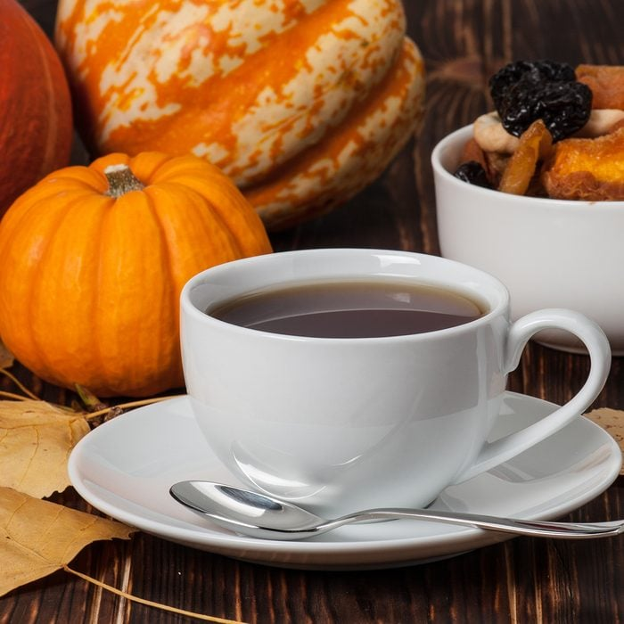

Pumpkin Spice Coffee
Perp-Time: 5minutes
Yield: One large, or two small smoothies
Diet: Pumpkin pie spice, vanilla almond milk, maple syrup
Ingredients
- ¼ cup ground coffee
- 1 teaspoon ground allspice
- ½ teaspoon ground cinnamon
- 4 cups water
For Finishing
Brew some quality coffee. When I make coffee I like a pour-over method, but you can use a french press, french drip, or a Mr. Coffee. Just make your coffee how you like it.
Directions:
Mix the ground coffee, allspice, and cinnamon in a small bowl, and place into the filter of a drip coffee maker. Pour 4 cups of water into the coffee maker, and turn on the machine. When coffee has finished dripping, pour into 2 cups. Stir in cream and sugar to taste.